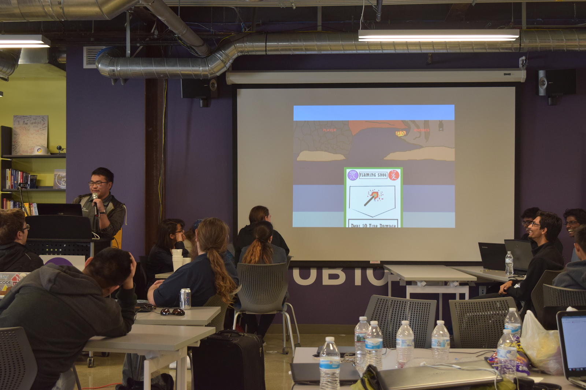
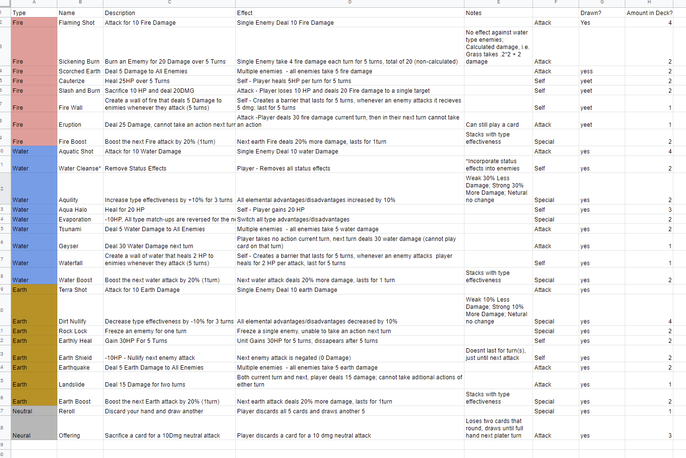

Presentation of game demo

"The Stack is Daily Bruin’s data journalism and newsroom tech blog. We investigate public data, experiment with technology and apply quantitative insights to real life."
As a writer and developer for The Stack, it is my job to communicate stories and issues (especially those relevant to the UCLA community) through a combination of writing, technology, and data visualization. We have covered everything from class registration to COVID-19 community spread simulations. In order to portray compelling argumentative narratives, we utilize data visualization, interactives, and other technologies to complement and break down complex issues in understandable and engaging ways.
Running late to class? Trying to avoid endless stairs after a tough workout? Find out which walking routes from the hill to lecture halls and libraries on campus are the fastest, burn the most calories or have the least amount of stairs. This project helps you explore new routes from the dorms to campus and provides various statistics about each route.
For this article, I was helped formulate data collection methods and was in charge of creating the bubble graph visualization and narrative analysis of our data.
This upcoming article explores the progress UCLA and other University of California campuses have made toward their goal of carbon neutrality by 2025. We break down and visualize the main sources of greenhouse emissions, and compare and contrast the progress of different campuses toward this goal.
For this article, I am in charge of cleaning the data and training our Data Interns in creating engaging visualizations and utilizing various technologies to use various technologies to communicate our narrative.
In 2019, I led a team that participated in CodeDay LA, an event in which teams and individuals must program and create a project within twenty-four hours.
We created a demo for a game entitled "Elemental Cards" which was a card-based role playing game (Demo is shown to the right). I was in charge of developing the overall structure of the game, delegating tasks, and programming the user interface.
Our game demo ended up winning the "Best in Show" award at the event.

For my "Introduction to Humanities" class, I was part of a team that created a website that broke down environmental justice issues in Los Angeles county. Mixing design, narrative, and data visualization we explored the intersection of environmental degradation, socioeconomic factors, and health outcomes for LA county residents.
I was in charge of setting up and creating the overall design of the website, creating the interactive maps, and analysis of socio-economic data.
More details about the project can be found at the link below.
Chatbot Demo
Inspired by Malcom Barret's "Stochastic Shakespeare" which used Python and statistical methods to create a program that generated sonnets based on Shakespeare's writings, I created an interactive text bot that utilizes markov-chains to create novel and procedural messages based on an existing corpus of text. Users can interact with the chatbot and prompt it to send messages, the chatbot generates messages by analyzing the frequency of word combinations to create message that resemble (but are completely different from!) the original text.
Made with Mobirise - More